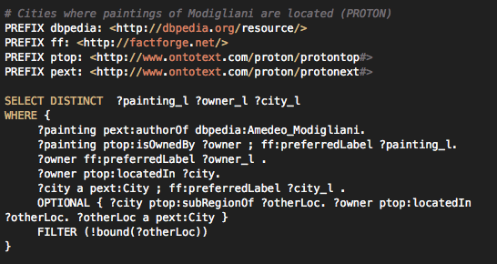

Web mining
Data mining handlar om att anlysera och hitta mönster i stora datasamlingar.
- Web usage mining - Anlysera data från surfanvändares beteenden, loggar aktiviteter (clickstream data)
- Web content mining - Data som redan finns på webben, innehåll i webbsidor, sökmotorer - crawlers, Strukturera ostrukturerad data
- Web-structure mining - Analyserar länkstruktur för att klassificera webbsidor. PageRank, Analysera sociala nätverk.
Foto from wikipedia: http://upload.wikimedia.org/wikipedia/commons/b/b8/Sao_Paulo_Stock_Exchange.jpg

SPARQL
